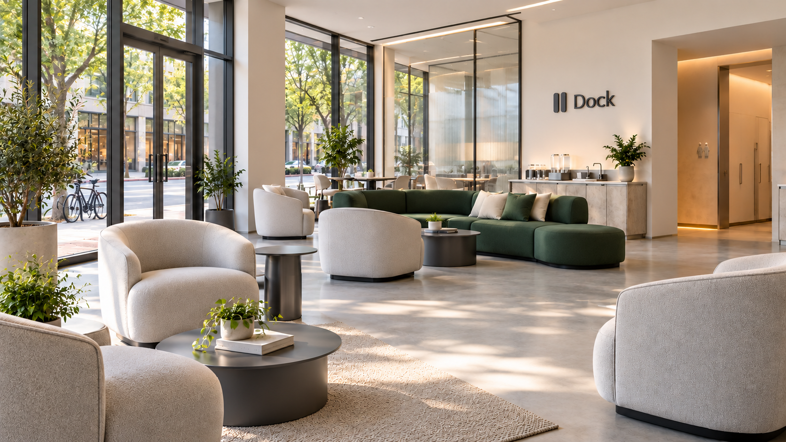

01 / RESET
The essential
first stop.
A clean restroom, available throughout opening hours. A basic part of the Dock experience, included with access.
An essential in every proposed Dock.
REST SPACES FOR COURIERS & DRIVERS
IN DEVELOPMENT — CALIFORNIAYou spend your day
keeping things moving.
This bit is for you.
Dock is a concept for places to rest between deliveries. A clean restroom. Drinking water. Somewhere to sit outside your car.
See the spaceNo locations open yet.
Exploring Mountain View & Sunnyvale.
Clean restrooms/A comfortable seat/Water & charging/Good company
FOR COURIERS & DRIVERS / THE SPACE
This is the space we’re working toward.
Choose a part of the experience below.

AI-GENERATED SPACE CONCEPT · NOT AN ACTUAL LOCATION
01 / RESET
A clean restroom, available throughout opening hours. A basic part of the Dock experience, included with access.
An essential in every proposed Dock.
02 / REST
Comfortable indoor seating. A break from the heat or cold. Somewhere to settle for a moment before the next order.
Visit lengths are still being worked out.
03 / RECHARGE
Phone charging and drinking water are essentials. Coffee, affordable snacks, and simple meals are possibilities we’re exploring.
Food and coffee are not confirmed amenities.
04 / CONNECT
A shared table to trade tips, talk about opportunities, or develop an idea together. A place to belong between deliveries.
Company when you want it. Space when you don’t.
Easy access, driver parking, and secure bicycle and scooter parking are part of the location brief.
The design is still taking shape.
FROM THE DRIVER’S SEAT
THE REASON DOCK EXISTS.
The idea started in the driver’s seat.
Dock founder Yehor Tkachenko has worked with Uber and DoorDash. Sometimes an hour from home, he wanted somewhere to sit down and rest outside his car.
That feeling became Dock: a shared break room for people whose workplace is the whole city.
Whether you drive, cycle, or ride, the idea is the same. A proper place to pause, close to where you’re working.
A PLACE BETWEEN THE MILES.BETWEEN DELIVERIES
A simple experience is the ambition.
Here’s the rhythm we’re designing around.
We’re looking at areas near restaurants, pickup spots, and everyday delivery activity.
Use the restroom. Refill your water. Charge your phone. Take a seat or catch up with someone.
A useful stop between orders, with entry and return rules still to be defined.
ACCESS / STILL TAKING SHAPE
We’re exploring a couple of ways to use Dock. Prices, opening hours, and visit rules haven’t been set.
A few things to knowON OUR RADAR
We’re exploring Mountain View and Sunnyvale for a first Dock. The vision starts with dedicated spaces, with room for community.
A wider network is the ambition. The locations and operating model still need to be worked out.
Mountain ViewArea under consideration
SunnyvaleArea under consideration
No properties selected. No opening date announced.
BEFORE YOU ASK
Dock is a concept in development.
Here’s where things stand.
Not yet. Dock is pre-launch, with no operating locations, customers, or revenue. Mountain View and Sunnyvale are areas we’re exploring, not announced openings.
Delivery couriers and drivers who regularly work nearby, including people who live elsewhere and those using bicycles, scooters, or motorcycles.
Repeat visits are part of what we’re exploring. Visit lengths, return rules, and membership limits are still undecided. Unlimited access is not a confirmed offer.
No platform partnerships are confirmed. Platform-supported memberships are a future possibility, with a separate agreement needed for each platform.
The space, location requirements, operating costs, and a sustainable model for one location and a future network. A pilot is currently deferred, and there is no opening date.
FOR INVESTORS / THE BUSINESS BEHIND THE BREAK
Idea stage. Pre-launch. Pre-revenue.
The opportunity, assumptions, and open questions.
The hypothesis: workers who return to the same delivery areas could support a shared rest hub through recurring membership, day access, and optional food sales.
No operating sites, paying customers, platform agreements, or validated demand. The pilot remains deferred.
01 / THE BUSINESS MODEL
Couriers and drivers who regularly return to the area. Local resident population is not the addressable customer count.
Memberships and day passes, with food and beverage sales to evaluate. Platform-funded access would require future agreements.
Reliable essentials and room for community. Mountain View and Sunnyvale are exploratory areas; no property has been selected.
02 / ILLUSTRATIVE SITE ECONOMICS
One mature-site scenario, per month. These are modeling inputs—not actual results, forecasts, or announced prices.
Assumed: 500 members; 10 day passes/day at $10; 20 meals/day at $7; 30 operating days; $22,000 fixed costs; $6/member, $2/pass, and $3/meal variable costs.
| Membership scenario | $25/mo | $50/mo |
|---|---|---|
| Revenue | $19,700 | $32,200 |
| Modeled expenses | $27,400 | $27,400 |
| Site surplus / loss | −$7,700 | +$4,800 |
| Break-even members | 906 | 391 |
Before central expenses, tax, financing, and recovery of opening investment. Break-even counts do not prove demand or capacity. Cost allowances remain unverified.
With 30 seats and 12 opening hours/day, 500 members plus 300 monthly day-pass visits imply about 44% average seat use at 12 member visits/month of 45 minutes. At 20 visits of one hour, that rises to about 95%. Peaks and additional service costs can make the same membership base much harder to support.
03 / THE SCALING QUESTION
After $48,000 aggregate site surplus and an assumed $20,000 central budget. Before tax and financing.
$200,000 per site. About six years of simple payback at the modeled mature run rate; actual ramp timing is not modeled.
Network revenue counts each membership once: this scenario assumes 5,000 unique members across ten sites, with service demand distributed evenly. An app alone does not establish scalable economics.
04 / WHAT NEEDS EVIDENCE
Smaller partner-hosted areas and a hybrid network remain options to evaluate. They are not an approved pivot, and partner economics are unknown.
Source: founder-provided Dock brief and illustrative financial model, October 18, 2026. No validated operating results.
Return to the courier experienceTHE FOUNDER
Founder of Dock.
Former Uber and DoorDash worker.
Yehor knows the problem from his own working day: finishing an order far from home and needing a proper break outside the car. Dock is his proposal for a dependable place to stop near the areas where couriers work.
His background spans film and fashion, including work as a first assistant director, creative director and fashion designer. He is Dock’s sole founder, with technical setup and deployment support from his father.
Contact YehorFOR THE PEOPLE WHO KEEP THE CITY MOVING.
Dock is in development. Come explore the idea.